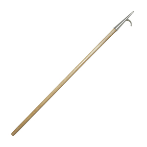

ϧⲁⲓ nn m, ship's pole, boat-hook: P 55 13 ⲡⲓϧ. مدراة (Dozy 1 439, Almk 2 103 مدرى). Cf ⲧⲁⲣ, with which ? confused, & ? ϩⲁ pole.
(noun masculine)
tool
ship's pole, boat-hook


complete
630a
See also:
Homonyms:
| view | ⲑⲱⲕ, ⲑⲟⲕ B | (noun masculine) mast of ship2774 |
| view | ϣⲧⲉ SB ϣⲧⲏ SF ϣⲑⲉ, ϣⲑⲉϩ B plural: ϣⲧⲏⲩ S plural: ϣⲧⲏⲟⲩ F | (noun masculine) ship's mast [ιστος]1984 |
| view | ϩⲁ, ϩⲟ, ϩⲁⲉ S | (noun masculine) pole, mast, weaver's beam [αντιον]2096 |
| view | ϫⲟⲓ SB ϫⲟⲉⲓ S ϫⲁⲓ ALF ϫⲁⲉⲓ SaAL plural: ⲉϫⲏⲩ SLF plural: ⲉϫⲏⲟⲩ B | (noun masculine) ship, boat [πλοιον, ναυς]2363 |
Homonyms:
| view | ϧⲁ {or ϧⲁⲓ} B | (noun masculine) heel, mark of heel (?)2074 |
| view | ϧⲁⲓ B | (noun) nitre2075 |
| view | ϧⲁⲓ B | (noun masculine) breath of nose2076 |
| view | ϩⲁ, ϩⲟ S ⳉⲁ A ϧⲁⲓ B ϩⲉⲉⲓ F | (noun masculine) winnowing fan [πτυον]2095 |